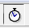
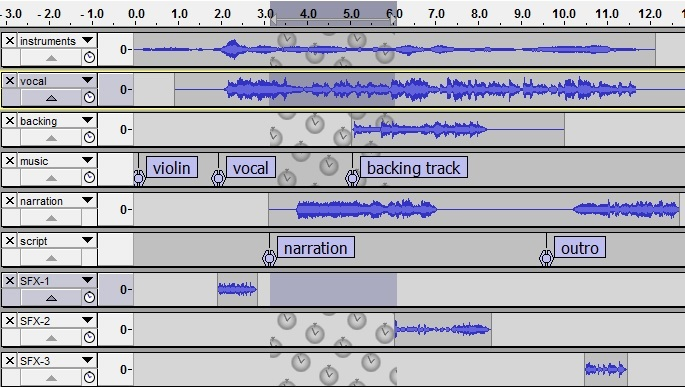

Sync-Locked Track Groups
From Audacity Manual
This lets you keep existing audio or labels synchronized with each other even when carrying out actions like inserting, deleting or changing speed or tempo.
| This command does NOT let you select particular individual tracks then interlock those selected tracks, rather Sync-Locking is based on Track Groups. |
Sync-Lock Tracks
Sync-Lock Tracks can be turned on or off at or by using the Sync-Lock Tracks button  in Edit Toolbar. Sync-Lock Tracks is off by default. Turning on Sync-Lock Tracks does not immediately realign tracks or labels. It forces tracks and labels to remain synchronised if they move after Sync-Lock Tracks is enabled.
in Edit Toolbar. Sync-Lock Tracks is off by default. Turning on Sync-Lock Tracks does not immediately realign tracks or labels. It forces tracks and labels to remain synchronised if they move after Sync-Lock Tracks is enabled.
The button is shown as recessed  when Sync-Lock Tracks is set to "on".
Sync-Locked Track Groups
Any audio track in Audacity can be in a group of one or more adjacent tracks that can be Sync-Locked with other tracks in that group. To form a Sync-Locked Track Group the tracks must be adjacent to each other, they may be terminated with a Label Track. If you require multiple Sync-Locked Track groups in your project then only the last one may be without a terminating Label Track, all the preceding ones must terminate in a label track to delimit them from the next following Sync-Locked Track Group. A Sync-Locked Track Group may have multiple label tracks as long as the label tracks are together at the bottom of the group.
When Sync-Lock is on, an icon  shows bottom right in the Track Control Panel of each track in a Sync-Locked Track Group, provided at least one of those tracks is selected. The icon denotes all tracks that will be affected when a menu operation in a selected track inserts or deletes audio (or otherwise changes the audio's position on the Timeline). The unselected tracks in the Group that will be affected are denoted by a patterned "Sync-Lock" selection in the waveform (a wallpaper with clockfaces) instead of the dark gray of a normally selected track.
shows bottom right in the Track Control Panel of each track in a Sync-Locked Track Group, provided at least one of those tracks is selected. The icon denotes all tracks that will be affected when a menu operation in a selected track inserts or deletes audio (or otherwise changes the audio's position on the Timeline). The unselected tracks in the Group that will be affected are denoted by a patterned "Sync-Lock" selection in the waveform (a wallpaper with clockfaces) instead of the dark gray of a normally selected track.
Selecting Groups for Sync-Locking
Selecting at least one track from within a Group will mark that particular group as Sync-Locked, the icon  will appear in the Track Control Panel of all the tracks in that Group. If you have multiple Groups then clicking on a track in a different Group will cause the Sync-Lock selection to move to the new Group.
will appear in the Track Control Panel of all the tracks in that Group. If you have multiple Groups then clicking on a track in a different Group will cause the Sync-Lock selection to move to the new Group.
You can select multiple Groups to be Sync-Locked. Following your initial group selection, hold SHIFT while clicking on the Track Control Panel in one of the tracks in the additional Group(s) that you require. See the example below.
- In the common scenario of audio tracks only, or one or more audio tracks with only label tracks underneath them, the project only has a single Group.
- However if separate Groups are defined (typically by inserting a label track between audio tracks) each Group is independent and will not interact with another Group unless at least one track in each Group is selected.
- All tracks in a Sync-Locked Track Group are interlocked with each other even if unselected.
Example
- 
Also observe that although a selection has been made only in the second track of the first group and the first track of the bottom group all the other tracks in both Groups, including the label track, have the clock-wallpaper background to indicate that they are Sync-Locked. The middle group is not Sync-Locked and would remain unaffected by any editing changes applied to the selected Groups.
Using Sync-Locked Tracks
The following links demonstrate in more detail the use of Sync-Locked Tracks in Audacity for common editing tasks: